방송통신기사 (2019-10-12 기출문제)
1과목: 디지털 전자회로
1. 다음 평활회로에서 직류출력전압은 약 얼마일가?
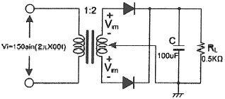
- 48[V]
- 72[V]
- 138[V]
- 192[V]
(정답률: 58%)

2. 제너 다이오드의 양단 전압이 12[V], 제너 다이오드에 흐르는 전류가 10[mA]일 때 제너 다이오드측의 소비전력은?
- 120[mW]
- 130[mW]
- 140[mW]
- 150[mW]
(정답률: 68%)
3. 다음 중 정류회로에서 다이오드를 병렬로 여러개를 접속시킬 경우에 나타나는 특성으로 옳은 것은?
- 과전압으로부터 보호한다.
- 정류회로의 전류용량이 커진다.
- 정류기의 역방항 전류가 감소한다.
- 부하출력에서 맥동률을 감소시킨다.
(정답률: 58%)
4. 다음 중 트랜지스터 증폭 특성에 대한 설명으로 틀린 것은?
- 공통베이스 회로의 입력 임피던스는 작고 출력 임피던스는 크다.
- 공통 베이스 회로의 전류 이득과 공통 컬랙터 회로의 전압 이득은 모두 1보다 크다.
- 공통 컬랙터 회로의 입력 임피던스는 크고 출력 임피던스는 작아 임피던스 매칭 회로로 사용된다.
- 증폭 회로의 입출력 위상관계는 공통 베이스 및 컬랙터 회로의 경우 동일 위상이고 공통 위상이고 공통 이미터의 경우 반전된 위상이다.
(정답률: 59%)
5. 다음 부궤환 방식 중 입력 임피던스는 감소하고 출력 임피던스가 증가하는 방식은?
- 병렬 전류 궤환회로
- 병렬 전압 궤환회로
- 직렬 전류 궤환회로
- 직렬 전압 궤한회로
(정답률: 53%)
6. 다음 그림에서 입력전압 v는? (단, R=2R)
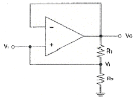
- Vi=Vo
- Vi=2Vo
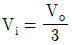
- Vi=3Vo
(정답률: 64%)
7. 다음 중 OP-AMP 성능을 판단하는 파라미터로 관련이 없는 것은?
- Vio (입력 오프셋 전압)
- CMRR(동상 신호 제거비)
- IB(입력 바이어스전류)
- PIV(최대 역 전압
(정답률: 60%)
8. 그림과 같은 회로에 대한 설명 중 옳은 것은?
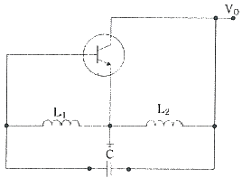
- 콜피츠 발진회로이다.
- VHF대나 UHF대에서 많이 사용 된다.
- 부궤환을 적용하였다.
- 하틀리 발진화로이다.
(정답률: 65%)
9. 발진회로의 출력이 직접 부하와 결합되면 부하의 변동으로 인하여 발진주파수가 변동된다. 이에 대한 대책이 아닌 것은?
- 정전압 회로를 사용한다.
- 발진회로와 부하 사이에 완충증폭기를 접속한다.
- 발진회로를 온도가 일정한 곳에 둔다.
- 다음 단괴의 결합을 밀 결합으로 한다.
(정답률: 61%)
10. 다음 중 수정발진기에서 발진주파수가 안정된 이유가 아닌 것은?
- 발진 조건을 만족하는 유도성 주파수 범위가 넓다.
- 주위 온도의 영향이 적다.
- 전원이나 부하의 변동에 대하여 안전도가 좋다.
- 수정진동자의 Q가 높다.
(정답률: 39%)
11. FM 변조에서 최대 주파수 편이가 80[kHz]일 때 주파수 변조파의 대력폭은 약 얼마인가?
- 40[kHz]
- 60[kHz]
- 80[kHz]
- 160[kHz]
(정답률: 55%)
12. FM수신기에 사용되는 주파수변별기의 역할은?
- 주파수 변화를 진폭 변화로 바꾸어준다.
- 진폭 변화를 위상 변화로 바꾸어준다.
- 주파수체매를 행한다.
- 최대주파수편이를 증가시킨다.
(정답률: 43%)
13. 주파수변조(FM)에서 변조지수를 나타낸 것 중에 대역폭이 가장 넓은 것은?
- 0.5
- 1
- 1.5
- 2
(정답률: 64%)
14. 다음 중 PM피변조파에 대한 설명으로 옳은 것은?
- 순시위상은 변조신호의 미분 갓ㅂ에 비례하고, 순시주파수는 변조 신호에 비례한다.
- 순시위상은 변조신호에 비례하고, 순시주파수는 변조신호의 미분값에 비례한다.
- 순시위상은 변조신호의 적분값에 비례하고, 순시주파수는 변조신호에 비례한다.
- 순시위상은 변조신호에 비례하고, 순시주파수는 변조신호의 적분값에 비례한다.
(정답률: 55%)
15. 다음 그림은 이상적인 펄스를 나타낸 것이다. 펄스의 듀티 싸이클 (Duty CycIe) D의 식으로 옳은 것은?
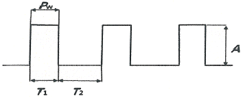
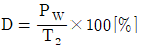
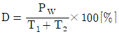
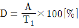
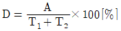
(정답률: 66%)
16. 다음 그림과 같은 클램핑 회로의 출력 파형은?
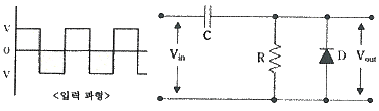
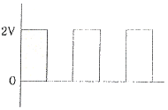
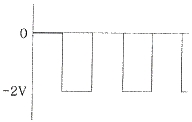
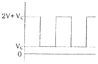
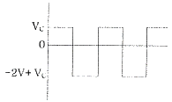
(정답률: 65%)
17. 다음 진리표를 부울 대수식으로 표시하면?
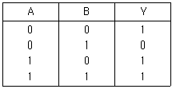
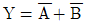
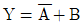
- Y=A*B
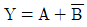
(정답률: 57%)
18. 다음 논리식을 간단히 하면?
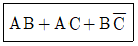
- AB+C
- AC+B
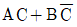
- A
(정답률: 62%)
19. 그림의 코드 변환회로의 명칭은?
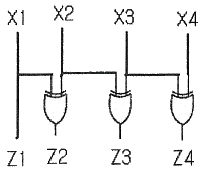
- BCD-GRAY 코드변환기
- BCD-2421 코드변환기
- BCD-3초과 코드변환기
- BCD-9의 보수변환기
(정답률: 65%)
20. 다음 중 리플 카운터(RippIe Counter)에 대한 설명으로 틀린 것은?
- 비동기 카운터이다.
- 카운트 속도가 동기식 카운터에 비해 느리다.
- 최대 동작 주파수에 제한을 받지 않는다.
- 회로 구성이 간단하다.
(정답률: 50%)
2과목: 방송통신 기기
21. NTSC 컬러TV 동기 신호의 종류가 아닌 것은?
- 세그먼트 동기신호
- 수평 동기신호
- 색 동기신호
- 수직 동기신호
(정답률: 78%)
22. 다른 국에 의한 녹화 재생이나 다원중계 등 비동기의 영상신호를 필드 또는 프레임 메모리에 기록하여 이것을 자국의 동기신호에 맞추어 읽어내는 장치는?
- TBC
- FS
- ADC
- DVD
(정답률: 78%)
23. 다음 중 방송에 사용될 영상소재를 컴퓨터 영상장치에 의하여 입력받아 방송소재 검색, 미디어관리, 캡쳐 등의 기능을 수행하는 것은?
- Betacam System
- Master Control System
- ADC System
- Capture System
(정답률: 80%)
24. 다음 중 강한 음성입력에 의해 피변조파의 주파수 변화가 순간적으로 과대하게 되는 것을 방지하는 회로는?
- 프리엠퍼시스 회로
- 순시 주파수 편이 제어(IDC) 회로
- 자동 주파수 제어 (AFC) 회로
- 지연 이득 제어 회로
(정답률: 68%)
25. 여러 개의 입력 마이크나 녹음기, 턴테이블, 라인입력, 음악효과 등을 혼합 처리해서 VCR 또는 Tape recorder에 녹음하거나 앰프를 통해 스피커로 보내는 것은?
- 콘솔(음향효과)
- 녹화기
- 오디오 인코더
- 프리앰프
(정답률: 86%)
26. 다음 중 진폭변조의 장점이 아닌 것은?
- 변복조 회로가 간단하다.
- 주파수 변동에 강하다.
- 레벨 변동에 영향을 받지 않는다.
- 피변조파의 점유 주파수 대역폭이 좁다.
(정답률: 57%)
27. 전송신호가 111111111일 때 여기에 PN(Pseudo Noise) 신호 100101010을 가하면 출력 신호 값은?
- 111111111
- 100101010
- 011010101
- 100101011
(정답률: 79%)
28. 연주소와 송신소 간에 TV 신호를 전송하기 위한 링크는?
- ATL
- STL
- TTL
- YTL
(정답률: 88%)
29. 칼라 영상 신호의 Y, Cd, Cr 중 Y가 나타내는 것은?
- 휘도
- 채도
- 포화도
- 생상
(정답률: 75%)
30. 디지털방송 서비스 중에서 하나의 프로그램을 여러 개의 채널을 통해 시작 시간을 각각 달리하여 제공하는 것은?
- EPG
- CAS
- DVD
- NVOD
(정답률: 70%)
31. 다음 그림과 같은 위성방송 수신 안테나의 명칭은?
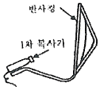
- 혼 반사
- 카세그레인
- 오프세트 파라볼라
- 그레고리언
(정답률: 72%)
32. 다음 중 유선방송 전송망의 구성 요소가 아닌 것은?
- 연장 증폭기
- ONU(Optical Node Unit)
- 다이폴 안테나
- TO(Tap Off)
(정답률: 62%)
33. CATV 전송선로설비에서 동축케이블에 비해 광케이블의 특성이 아닌 것은?
- 큰 대역폭의 전송이 가능하다.
- 전자유도의 영향을 받지 않는다.
- 전송 시 신호 손실이 적다.
- 도청에 문제가 크다.
(정답률: 77%)
34. 다음 중 CATV 전송매체에 대한 설명으로 옳지 않은 것은?
- 마이크로웨이브는 사용 주파수 대역에 제한이 없다.
- 광섬유케이블이 동축케이블에 비해 전송대역이 넓다.
- 광섬유케이블이 마이크로웨이브에 비해 보안성이 높다.
- 광섬유케이블이 동축케이블에 비해 누화가 적다.
(정답률: 77%)
35. 디지털멀티미디어방송(DMB : Digital Multimedia Broadcasting)에 대한 설명 중 바르지 못한 것은?
- DMB의 멀티미디어 서비스를 수신하는 형태로 휴대용 수신과 이동형 수신이 있다.
- DMB가 각광을 받게 된 것은 우리나라에서 실시하고 있는 디지털 TV가 이동수신에 강점을 지니고 있기 때문이다.
- 원래 DAB(Digital Audio Broadcasing)로 시작하다가 멀티미디어 방송개념이 추가되면서 DMB라는 용어가 나타났다.
- DMB는 이동수신이 가능하여 TV의 공간적 확대효과를 꾀할 수 있다.
(정답률: 78%)
36. 송신기의 기준 신호 레벨 ES=1[Vrms]이고, 잡음레벨 En=0.01[Vrms]와 같을 때, AM Noise Ratio는 얼마인가?
- -10[dB]
- -20[dB]
- -30[dB]
- -40[dB]
(정답률: 72%)
37. 스펙트럼분석기의 성능을 표시하는 항목으로, 값이 작을수록 해상도가 우수해지는 것은 무엇인가?
- Maximum Input Level
- Resolution Bandwidth
- Frequency Range
- Marker
(정답률: 76%)
38. 다음 중 Oscilloscope의 조작에 대한 설명으로 틀린 것은?
- 입력신호의 동기 극성을 맞추기 위해 'SLOPE'위치를 바꿨다.
- Scope에 저주파 60[Hz]의 구형파를 입력시켰을 때 Coupling 선택을 'DC'로 했다.
- 과형이 나타난 화면의 상단에 Jitter현상이 나타나, 'Trigger' Level을 과형 상단부로 맞췄다.
- CH1, 2에 각각 다른 신호를 입력시킨 후 동일한 시간 속에서 두 신호를 비교하고자 'CHOP'기능을 선택했다.
(정답률: 82%)
39. 다음 중 공진회로 이외의 다른 회로가 원인이 되어 목적 이외의 다른 주파수 성분이 정궤환에 의해 발진되는 현상은?
- 기생발진
- 궤환발진
- 공진발진
- 여진발진
(정답률: 87%)
40. 다음 중 스펙트럼 분석기(Spectrum Analyzer) 용도로 부적합한 것은?
- 신호의 주파수, 레벨, 주파수 대역폭 측정
- 잡음 전력 및 S/N, C/N 측정
- 스퓨리어스(불요방사) 측정
- 멀티버스트 주파수 특성 측정
(정답률: 60%)
3과목: 방송미디어 공학
41. 다음 중 연주소 내 부조정실의 역할로 틀린 것은?
- 뉴스센터, 편집실 등 설비에서 넘겨받은 영상, 음성 신호 송신소로 송출한다.
- 카메라, 조명, 영상, 무대를 책임지는 프로듀서, 기술감독 등이 근무하고 있다.
- 다양한 영상, 조명, 음향 등을 조정하는 장비가 설치되어 있다.
- 드라마 등 각종 TV프로그램을 녹화한다.
(정답률: 78%)
42. 다음 중 방송편성의 정의로 가장 타당한 것은?
- 방송의 공적인 발표문
- 마이크로폰을 통해 들어오는 음향의 동시접속
- 기계적, 기술적 소산으로 정신적 창조활동
- 방송사항의 종류, 내용, 분량 및 그 결정행위
(정답률: 82%)
43. 다음 중 민영방송사의 주요 재원에 해당되는 것은?
- 조세
- 시청료
- 광고료
- 등록세
(정답률: 83%)
44. 다음 중 FM 라디오방송에서 S/N비를 향상 시키기 위해 75[μs]의 시정수를 사용하여 음성 대역의 고역 부분의 레벨을 강조시키는 회로는?
- 펄스 회로
- 매트릭스 회로
- 디엠파시스 회로
- 프리엠파시스 회로
(정답률: 76%)
45. 다음 중 방송 수단에 의한 분류가 아닌 것은?
- 라디오방송
- TV방송
- 팩시밀리방송
- 중파방송
(정답률: 76%)
46. 다음 중 음압레벨(SPL:Sound Pressure Level)을 구하는 공식으로 맞는 것은? (단, P:음압[Microbar]
- SPL=20 log10(P/0.02)[dB]
- SPL=20 log10(P/0.002)[dB]
- SPL=20 log10(P/0.0002)[dB]
- SPL=20 log10(P/0.00002)[dB]
(정답률: 75%)
47. 인간의 가청주파수는 20~20,000[Hz]이다. 가청주파수 3[Hz]의 파장은 길이로 얼마인가?
- 1[km]
- 10[km]
- 100[km]
- 1,000[km]
(정답률: 72%)
48. 대기온도가 20℃일 때 음파가 공기 중에서 전달되는 속도는 얼마[m/sec]인가?
- 342.9
- 343.3
- 343.7
- 344.1
(정답률: 77%)
49. 양자화기의 비트수가 증가할 때마다 부호화에 따르는 양자화 오차인 SQNR(Signal-to-Quantization Noise Ratio)의 감소량은 얼마인가?
- 약 2[dB]
- 약 3[dB]
- 약 4[dB]
- 약 6[dB]
(정답률: 80%)
50. 다음 중 음원이 관측점으로부터 이동하거나 또는 관측점이 음원으로부터 이동할 때 음의 주파수가 변화되어 들리는 현상은?
- 도플러효과
- 맥놀이
- 공진
- 회절
(정답률: 83%)
51. 다음 중 음성 및 음향 신호의 부호화와 거리가 먼 것은?
- PCM(Pulse Code Modulation)
- DPCM(Differential Pulse Code Modulation)
- JPEG
- MPEG Audio
(정답률: 87%)
52. 다음 중 카메라가 피사체를 향해 점차 앞으로 가거나 뒤로 멀어지는 움직임을 지칭하는 촬영기법으로 가장 적절한 것은?
- 팬(Pan)
- 틸트(Tilt)
- 붐(Boom)
- 달리(Dolly)
(정답률: 76%)
53. HDTV방식에서 사용되는 변조방식과 한 채널당의 대역폭을 옳게 나열 한 것은?
- OFDM 방식/6[MHz]
- 8VSB 방식/6[MHz]
- OFDM 방식/7~8[MHz]
- 8VSB 방식/7~8[MHz]
(정답률: 76%)
54. 다음 중 렌즈(Lens)의 구성요소가 되는 일련의 동심원들을 평면상에 적절하게 배치해 짧은 초점거리를 맺게 한 렌즈로 무대에서 집광 조명기구에 주로 사용되는 것으로 가장 적절한 것은?
- 비구명(Aspheric) 렌즈
- 프리넬(Fresnel) 렌즈
- 어안(Fish-eye) 렌즈
- 줌(Zoom) 렌즈
(정답률: 71%)
55. 방송용 조명에서 램브란트 라이트의 설명으로 옳은 것은?
- 인물의 정면에서 비추는 빛
- 뒷면으로부터의 빛
- 경사 45도에서의 빛
- 인물의 바로 위에서의 빛
(정답률: 86%)
56. 인터넷방송 시스템의 구현방식이 아닌 것은?
- 라이브 스트리밍(Live Streaming) 방식
- 푸시 서비스(Push Streaming) 방식
- 인터캐스트(Intercast) 방식
- 오프-디멘트(Off-Demand) 방식
(정답률: 70%)
57. 멀티미디어의 개념에 대한 정의로 가장 적절한 것은?
- 기존의 미디어 이외에 전자 기술의 발달로 등장한 지금까지 없었던 새로운 정보 교환 및 통신수단을 말한다.
- 텍스트와 그림, 소리 혹은 동영상 등의 복합된 형태로 컴퓨터와 인간이 수 많은 정보를 상호 전달하는 미디어이다.
- 연관된 정보간에 링크로 연결하여 정보를 네비게이션 할 수 있도록 한 미디어이다.
- 일방적으로 정보를 전송하는 것이 아니라 서로 상호간에 정보를 전달하는 미디어이다.
(정답률: 76%)
58. 다음 중 TV 자막방송인 클로즈드 캡션(Closed Caption)에 대한 설명으로 옳은 것은?
- 방송사에서 화면 위에 뉴스, 비디오, 영화 등의 글자를 넣어 누구나 볼 수 있는 방식
- 시청자가 자막을 보이거나 보이지 않게 선택할 수 있는 방식
- 생방송을 실시간으로 속기하여 내보내는 방식
- 녹화된 테이프에 자막을 삽입하거나 사전에 방송대본 등의 데이터를 입력해 보는 방식
(정답률: 72%)
59. 다음 중 UHDTV 방송의 성능으로 잘못된 것은?
- 해상도:3,840×2,160
- 화면비:16:9
- 영상압축방식:HEVC
- 음성압축방식:DAB
(정답률: 73%)
60. 디지털 텔레비전 방송에서 방송편성표 및 프로그램 내용 등을 안내하는 기능을 무엇이라고 하는가?
- DLS(Dynamic Label Segment)
- EPG(Electronic Program Guide)
- NPAD(Non-Program Associated Data)
- FIC(Fast Information Channel)
(정답률: 76%)
4과목: 방송통신 시스템
61. 외부로부터 입력되는 여러 영상신호에 대해 동일한 동기신호를 기준으로 동작하게 하는 것을 무엇이라 하는가?
- GENLOCK
- DIMMER
- 방송용 서버
- 표준 시계
(정답률: 83%)
62. 제작현장에서 HD카메라로 촬영하기 전에 반드시 카메라 셋업이 우선 되어야 한다. 이 때 필요한 표준 Chart가 아닌 것은?
- Gray Chart
- Cam-Align Chart
- Eye Pattern Chart
- Standard Chart
(정답률: 74%)
63. 전력레벨이 20[dBm]인 신호가 1[m]당 1[dB]가 감쇠된다. 10[m]의 전송선로를 통과한 후의 전력[mW]은 얼마인가?
- 0[mW]
- 10[mW]
- 20[mW]
- 100[mW]
(정답률: 69%)
64. 다음과 같은 조건의 수신기 한계레벨은?
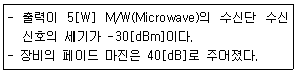
- -70[dBm]
- -47[dBm]
- -33[dBm]
- -27[dBm]
(정답률: 77%)
65. 다음 중 방송통신망의 종류가 아닌 것은?
- 무선전송방식
- 유선전송방식
- 위성전송방식
- 수중전송방식
(정답률: 88%)
66. 다음 중 ONU(Optical Network Unit)에 대한 설명으로 옳은 것은?
- 광 신호를 전기신로로 전환하여 분배하는 장치
- 광 통신망에서 광 단자 간을 서로 연결하여 신호레벨을 적절하게 하는 장치
- 광 통신망에서 광으로 전송되는 회선분배방식을 패킷교환방식으로 전환해 주는 장치
- 광 신호로 오는 패킷들을 다중화하여 고속의 데이터율로 전환하여 전송하는 장치
(정답률: 71%)
67. 다음은 디지털 위성방송 수신기의 구조이다. (가)~(라)에 대하여 순서대로 기술한 것은?
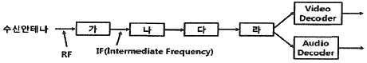
- LNB, 복조기, 오류정정기, MPEG-TS 역다중화기
- 복조기, LNB, MPEG-TS 역다중화기, 오류정정기
- 오류정정기, 복조기, LNB, MPEG-TS 역다중화기
- LNB, 오류정정기, 복조기, MPEG-TS 역다중화기
(정답률: 80%)
68. 다음 중 주파수변조에서 초대주파수편이가 75[kHz]와 최대변조신호의 주파수가 15[kHz]일 경우에 FM 주파수의 대역폭으로 옳은 것은?
- 15[kHz]
- 75[kHz]
- 150[kHz]
- 180[kHz]
(정답률: 81%)
69. 다음 중 디지털 변조방식으로 옳지 않은 것은?
- ASK
- PSK
- FM
- FSK
(정답률: 82%)
70. 다음 중 화상응답시스템이 가지고 있는 특징이 아닌 것은?
- 외부의 컴퓨터와 접속하여 각종처리를 외부의 컴퓨터로 행하거나, 외부의 데이터베이스를 이용할 수 있는 외부 센터 접속기능.
- 복수의 연속한 화면을 짧은 일정시간 간격으로 연속적으로 제시하는 애니메이션(Animation) 기능.
- 단말로부터의 입력 데이터를 파라미터로 하여 프로그램에 의해 문자ㆍ도형 화면의 즉시 생성기능.
- 문자ㆍ수치 등의 코드 정보와 그래프ㆍ도면ㆍ사진 등의 화장정보가 혼합(Mix)된 고정밀 멀티미디어 정보를 재처리가 가능한 구조화 문서(믹스트 모드 문서)로서 다룰 수 있기 때문에 정보의 편집, 재가공이 용이하게 행해진다.
(정답률: 74%)
71. 다음 중 CATV 시스템의 가입자 설비에 해당되는 것은?
- 간선 증폭기
- 컨버터
- ONU
- 결합기
(정답률: 70%)
72. 인터넷 멀티미디어 방송 제공사업자의 허가 유효기간은?
- 가. 1년
- 3년
- 5년
- 7년
(정답률: 74%)
73. 안테나의 이득을 절대이득(dBi)과 상대이득(dBd)로 구분해 볼 수 있는데, 이중 상대이득이 5.5[dBd]인 경우 절대이득은 몇 [dBi]인가?
- 7.65[dBi]
- 8.55[dBi]
- 9.15[dBi]
- 11.22[dBi]
(정답률: 72%)
74. 다음 중 TV 주조정실에서 사용되는 방송장비에 해당하는 것은?
- 편집기
- Master Switcher
- 송신기
- 카메라
(정답률: 84%)
75. 디지털방송 8-VSB 송신기 블록에서 변조 이전 과정의 순서로 맞는 것은?
- 데이터 랜덤화-리드솔로몬 부호화-데이터 인터리브-드렐리스 부호화
- 리드솔로몬 부호화-데이터 랜덤화-데이터 인터리브-트렐리스 부호화
- 데이터 랜덤화-데이터 인터리브-리브솔로몬 부호화-트렐리스 부호화
- 데이터 랜덤화-리드솔로몬 부호화-트렐리스 부호화-데이터 인터리브
(정답률: 79%)
76. 다음 위성통신체 서브시스템 중 버스서브시스템의 구성부에 해당하지 않는 것은?
- 중계기계
- 자세제어계
- 추진계
- 열제어계
(정답률: 60%)
77. 다음 방송방식 중 방송신호를 전송하는데 가장 넓은 신호대역폭을 필요로 하는 방식은 무엇인가?
- 지상파방송
- 위성방송
- 케이블방송
- DMB방송
(정답률: 85%)
78. 다음 중 유럽의 지상파 디지털 TV 전송방식은?
- NTSC
- ATSC
- ISDB-T
- DVB-T
(정답률: 76%)
79. 다음 중 방송국 송신소 시스템 설계의 기본조건에 해당되지 않는 것은?
- 전파의 성능과 신뢰도를 확보할 것.
- 보수, 운용성을 갖출 것.
- 경제 효율을 높일 것.
- 장기간에 걸쳐서 유지되지 않도록 할 것.
(정답률: 84%)
80. 종합유선전송로 최종시험(End-To-End)의 표준품셈 공정에 해당되지 않는 시험은?
- 영상반송파의 신호레벨
- 혼 변조도
- 정재파비
- 송신단자간 결합도
(정답률: 61%)
5과목: 전자계산기 일반 및 방송설비기준
81. 정보표현의 단위가 작은 것부터 큰 순으로 올바르게 나열된 것은?
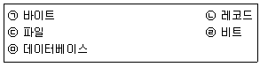
- ㉠ ㉡ ㉢ ㉣ ㉤
- ㉣ ㉠ ㉡ ㉢ ㉤
- ㉣ ㉢ ㉠ ㉤ ㉡
- ㉠ ㉣ ㉢ ㉡ ㉤
(정답률: 85%)
82. 10진수 46을 2진화 10진수(BCD)로 표현하면?
- 01000110
- 01010010
- 01010011
- 00100110
(정답률: 56%)
83. 두 개의 레지스터에 십진수의 1과-1에 해당하는 이진수가 저장되어 있다. 이 두 레지스터에 덧셈 연산을 수행한 결과로 옳은 것은?
- 결과 값은 0이고, 캐리(Carry)가 발생하지 않는다.
- 결과 값은 0이고 캐리(Carry)가 발생한다.
- 오버플로우(Overflow)와 캐리(Carry)가 발생한다.
- 오버플로우(Overflow)는 발생하나 캐리(Carry)가 발생하지 않는다.
(정답률: 69%)
84. 액정 디스플레이(LCD)에 대한 설명 중 틀린 것은?
- 네온전구와 아르곤 가스를 이용한 플라즈마 현상에 의해 정보를 표시한다.
- 디지털 계산기나 노트북, 컴퓨터 등의 표시장치에 사용된다.
- 비발광체이기 때문에 CRT보다 눈의 피로가 적고 전력소모가 적다.
- 보는 각도에 따라 선명도가 달라진다.
(정답률: 80%)
85. 다음 중 가중치 코드에 해당하지 않는 것은?
- BCD 코드
- 2421 코드
- Gray 코드
- 5211 코드
(정답률: 82%)
86. OS(Operating System) 기능 중 자원관리에 속하지 않는 것은?
- 기억장치 관리
- 주변장치 관리
- 파일 관리
- 보안 관리
(정답률: 75%)
87. 16진수의 값 ‘12345678’을 기억장치에 저장하려고 한다. Little Endian 방식으로 저장된 것은 어느 것인가?
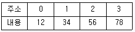
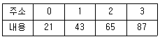
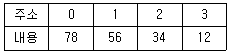
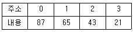
(정답률: 80%)
88. 다음 중 입력장치와 출력장치가 순서대로 짝지어진 것은?
- 마우스-트랙복
- 디지털 카메라-스캐너
- 트랙복-LCD
- CRT-PDP
(정답률: 78%)
89. 저작자(개발자)에 의해 무상으로 배포되는 컴퓨터 프로그램으로 개인이나 열광자(Enthusiast)가. 자기의 작품에 대해 동호인들의 평가를 받기 위해서 또는 개인적 만족감을 얻기 위해서 사용자 집단(User Group), PC통신말의 전자 게시판이나 공개 자료실, 인터넷의 유즈넷(Usenet) 등 을 통해 배포하는 소프트웨어는?
- 프리웨어
- 소셜 소프트웨어
- 멀웨어
- 번들
(정답률: 84%)
90. 4개의 중앙처리장치(CPU)를 두고 하나의 주기억장치(main memory)로 구성된 컴퓨터 시스템이 있다. 이 컴퓨터에서 하나의 작업을 4개의 중앙처리장치에서 동시에 수행하기 위하여 가장 적합한 운영체제 시스템은?
- 분산 처리(Distributed Processing) 시스템
- 다중 처리(Multi Processing) 시스템
- 다중 프로그래밍(Multi Programming) 시스템
- 실시간 처리(Realtime Processing) 시스템
(정답률: 80%)
91. 디지털위성방송채널의 심호대잡음비 기준값으로 알맞은 것은?
- 10[dB] 이상
- 12[dB] 이상
- 14[dB] 이상
- 20[dB] 이상
(정답률: 67%)
92. 다음 중 구내 전송선로설비의 설치 방법으로 틀린 것은?
- 보호기는 원칙적으로 인입구 부근의 옥외에 설치하고 접지하여야 한다.
- 분기기는 임피던스의 변화 없이 신호를 분기할 수 있어야 한다.
- 분배기는 임피던스의 변화 없이 신호를 분배 할 수 있어야 한다.
- 유휴 분기 단자는 50[Ω]으로 종단하여야 한다.
(정답률: 76%)
93. 낙뢰 또는 강전류 전선과의 접촉 등에 의한 이상전류 또는 이상전압의 유입을 제한하거나 차단하는 장치는?
- 분기기
- 분배기
- 보호기
- 직렬단자
(정답률: 88%)
94. 영상ㆍ음성ㆍ보조데이터로 구성되는 텔레비전방송서비스 채널과 단일 스트림으로 구성되는 데이터서비스 채널을 무엇이라 하는가?
- 자동채널
- 수동채널
- 프로그램채널
- 반자동채널
(정답률: 83%)
95. 유선방송신호를 증폭ㆍ조정ㆍ변환 및 혼합하여 선로에 전송하는 자치 및 이에 부가된 장치를 무엇이라 하는가?
- 전송선로설비
- 주 전송장치
- 수신설비
- 증폭기
(정답률: 68%)
96. 다음 중 전송망 사업등록 신청 시 과학기술정보통신부장관에게 첨부하여 제출할 서류가 아닌 것은?
- 등록신청서
- 자본금
- 기술인력 현황
- 방송위원회 추천서
(정답률: 80%)
97. 다음 중 중계유선방송의 영상반송파의 신호레벨은 수신자설비의 분계점에서 몇 [dBμV]이라야 하는가?
- 45~65[dBμV]
- 55~75[dBμV]
- 65~85[dBμV]
- 75~95[dBμV]
(정답률: 82%)
98. 과학기술정보통신부장관이 방송통신서비스의 발전을 위해 수립ㆍ시행하여야 하는 시책에 해당되지 않는 것은?
- 방송통신기술의 국제협력에 관한 사항
- 방송통신기술의 교육진흥 및 보급에 관한 사항
- 방송통신 기술정보의 원활한 유통을 위한 사항
- 방송통신 기술협력, 기술지도 및 기술이전에 관한 사항
(정답률: 60%)
99. 종합유선방송국설비에서 주파수변조방식에 의해 광케이블로 전송하는 경우 분계점은?
- 진폭변조기와 동축케이블의 최초 접속점
- 주파수변조기와 무선송신기의 최초 접속점
- 주파수변조기와 광송신기의 최초 접속점
- 텔레비전 인코더와 광송신기의 최조 접속점
(정답률: 74%)
100. 종합유선방송국의 진폭변조기의 출력 특성임피던스는 몇 [Ω]인가?
- 30[Ω]
- 50[Ω]
- 75[Ω]
- 600[Ω]
(정답률: 80%)